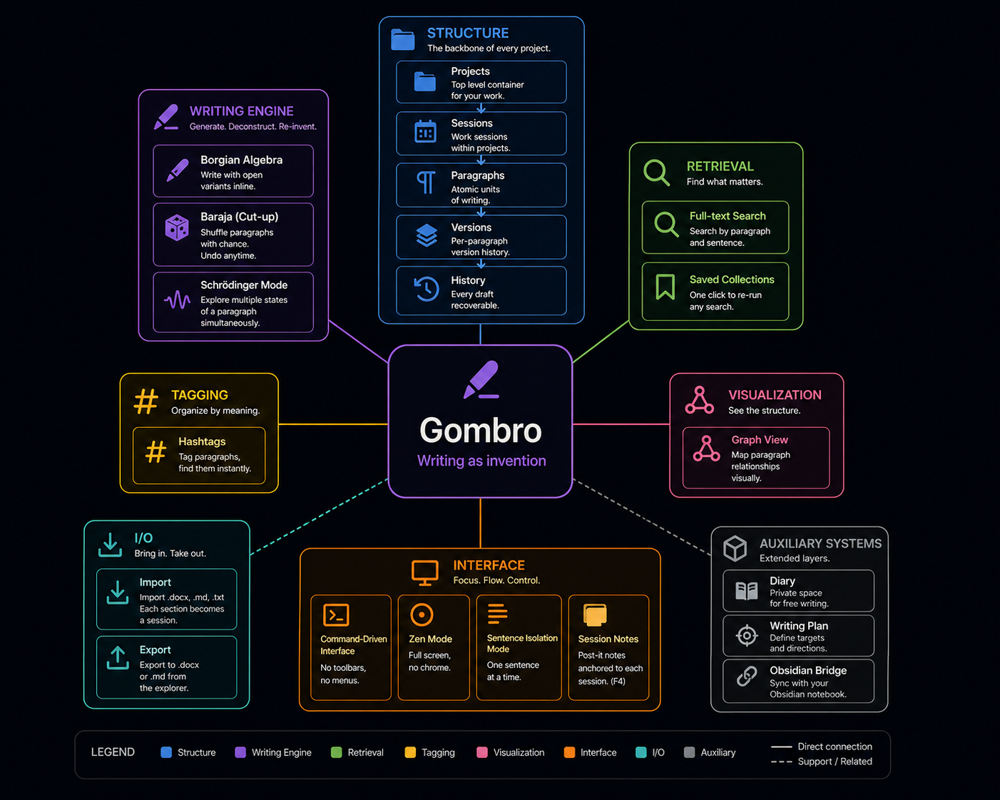

GOMBRO
Writing as invention

No AI. No cloud. Paragraph-centered.
For fiction, poetry, literary non-fiction.
No AI · Local only · No cloud
Feature map

Gombro vs
| Feature | Gombro | Ulysses | Scrivener |
|---|---|---|---|
| Search | Full-text; paragraph & sentence view. | Global find only. | Inspector search; no sentence mode. |
| Collections | Saved searches, one-click re-run. | No collections. | Keywords only; no dynamic search. |
| Cut-up / Shuffle | Built-in Baraja + paragraph history. | No. | No. |
| Version history | Per-paragraph, automatic, restorable. | No. | Snapshots; manual. |
| Borgian Algebra | Inline variant branching. | No. | No. |
| Export | .docx and .md from explorer view. | Multi-step export. | Multi-step compile. |
| Sentence Mode | One sentence at a time — the rest hidden. | No. | No. |
| Daily Diary | One session per day, Ctrl+D, literary date. | No. | No. |
| Schrödinger Mode | Track undecided text — strikethroughs & open variants. | No. | No. |
| Sync / Notes bridge | Via Obsidian (local, free). No cloud, no subscription. | Paid subscription required. | Paid add-on. |
| AI | None. Intentionally. | Built-in. | No. |
| Cloud | None. Local only. | iCloud sync. | Optional. |
About the author

Unverified testimonies

"If I had known it, I would have rewritten Don Quixote."

"With Gombro, Waiting for Godot would have ended."

"Dadaism would have been something else with Gombro."

"I wrote half of Ferdydurke using Gombro."

"Beatriz Viterbo wrote her deceptions using Gombro."

"I would have written Finnegans Wake in 15 months instead of 15 years."